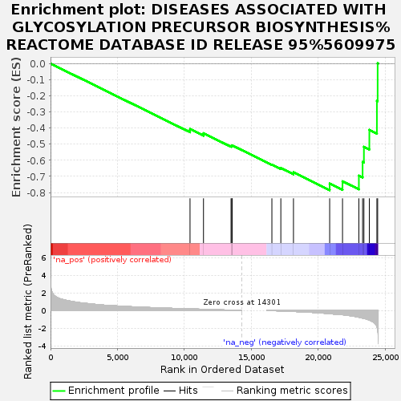
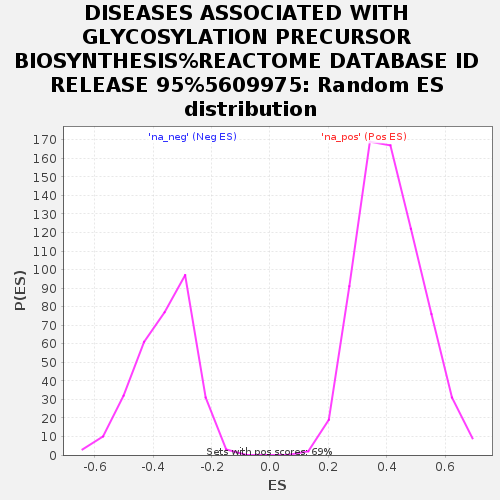

| Dataset | GvHD_A2_Ranks |
| Phenotype | NoPhenotypeAvailable |
| Upregulated in class | na_neg |
| GeneSet | DISEASES ASSOCIATED WITH GLYCOSYLATION PRECURSOR BIOSYNTHESIS%REACTOME DATABASE ID RELEASE 95%5609975 |
| Enrichment Score (ES) | -0.78509057 |
| Normalized Enrichment Score (NES) | -2.1667662 |
| Nominal p-value | 0.0 |
| FDR q-value | 0.0072675315 |
| FWER p-Value | 0.037 |

| SYMBOL | RANK IN GENE LIST | RANK METRIC SCORE | RUNNING ES | CORE ENRICHMENT | |
|---|---|---|---|---|---|
| 1 | GALM | 10426 | 0.180 | -0.4060 | No |
| 2 | PGM1 | 11433 | 0.136 | -0.4320 | No |
| 3 | GALE | 13492 | 0.038 | -0.5119 | No |
| 4 | MPI | 13557 | 0.035 | -0.5106 | No |
| 5 | GALT | 13575 | 0.034 | -0.5075 | No |
| 6 | GNE | 16545 | -0.018 | -0.6267 | No |
| 7 | GALK1 | 17214 | -0.052 | -0.6482 | No |
| 8 | DPM2 | 18158 | -0.109 | -0.6746 | No |
| 9 | DOLK | 20864 | -0.365 | -0.7445 | Yes |
| 10 | DHDDS | 21824 | -0.480 | -0.7303 | Yes |
| 11 | DPM3 | 23046 | -0.765 | -0.6951 | Yes |
| 12 | NUS1 | 23325 | -0.862 | -0.6106 | Yes |
| 13 | PMM2 | 23423 | -0.885 | -0.5161 | Yes |
| 14 | DPM1 | 23830 | -1.093 | -0.4112 | Yes |
| 15 | SRD5A3 | 24394 | -1.831 | -0.2306 | Yes |
| 16 | GFPT1 | 24450 | -2.109 | 0.0017 | Yes |
